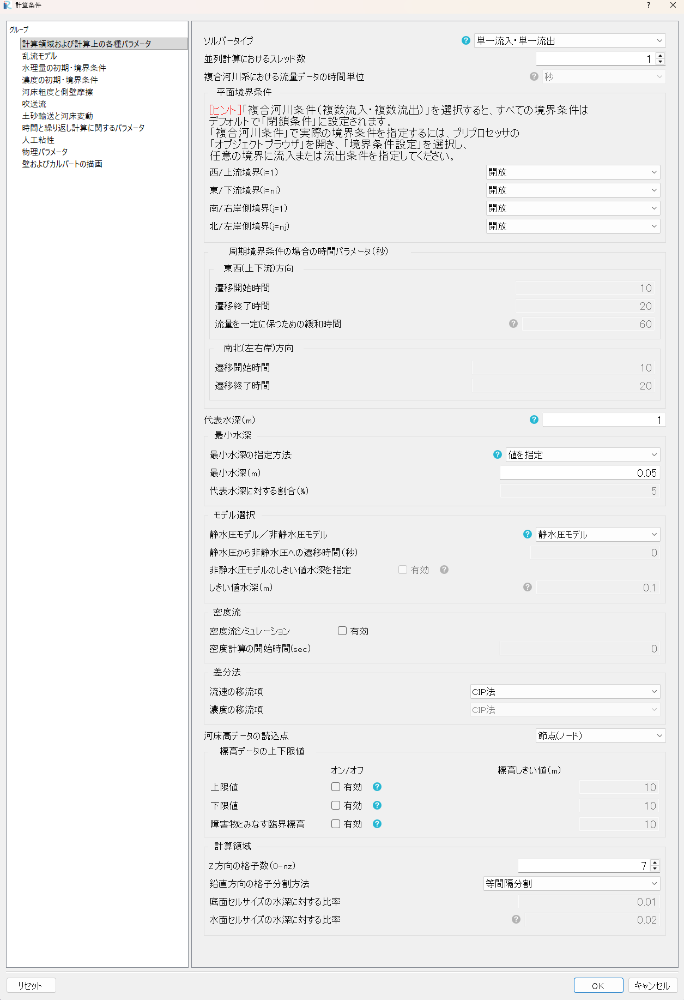

計算領域および計算上の各種パラメータ¶
対応バージョン: 2.0.20261007
境界条件の与え方（ソルバータイプ）、格子の四辺の条件、圧力の扱い（静水圧／非静水圧）、移流項の計算方法、鉛直方向の格子など、計算の基本となる設定をまとめたタブです。

主な設定の考え方¶
- ソルバータイプ：上流端から流入して下流端から流出する通常の河道は「単一流入・単一流出」で、四辺の条件をこのタブで指定します。分岐・合流のある河道や、湖・海域を含む計算では「複合河川条件」を選び、流入・流出は境界条件で設定します。
- 周期境界：上流端（または右岸側）に「周期境界」を選ぶと、反対側の辺とつながった無限に続く水路として計算します。等流状態の水路で、流下方向に一様な流れの構造を調べる場合に使います。初期条件から周期境界へは「遷移開始時間」から「遷移終了時間」にかけて徐々に切り替えます。
- 静水圧モデルと非静水圧モデル：一般的な河道の流れは静水圧モデルで十分です。構造物まわりの流れ、跳水、二次流など鉛直方向の加速度が重要な場合は非静水圧モデルを使います。非静水圧モデルでは「時間と繰り返し計算に関するパラメータ」タブの圧力計算の設定も使われます。
- 周期境界での流量：周期境界では、領域平均の流量が設定した流量になるよう、流下方向の外力を自動で調整します。「流量を一定に保つための緩和時間」はその調整の速さです。
- 渦動粘性係数：渦動粘性係数の設定は「乱流モデル」タブにあります。
- 最小水深：水深がこの値より小さいセルは計算上ドライとして扱います。
- 鉛直方向の格子：σ座標で水深を nz 個のセルに分けます。底面や水面の近くを細かくする方法は水面抵抗と鉛直格子を参照してください。
項目一覧¶
| 項目 | 説明 | 既定値 |
|---|---|---|
ソルバータイプj_discharge |
境界条件の与え方を選びます。「単一流入・単一流出」では、計算条件の画面で格子の四辺（西・東・南・北）の条件を指定します。 「複合河川条件」では四辺を閉鎖とし、流入・流出をプリプロセッサーの「境界条件設定」で任意の境界に設定します。分岐・合流のある河川や、湖沼・海域を含む計算に使います。 選択肢: 単一流入・単一流出／複合河川条件（複数流入・複数流出） |
複合河川条件（複数流入・複数流出） |
並列計算におけるスレッド数n_parallel |
OpenMP による並列計算のスレッド数です。使用する PC の物理コア数以下にしてください。1 では並列化しません。 | 1 |
複合河川系における流量データの時間単位timeUnit_mul |
複合河川条件で、境界条件に入力する流量・水位の時系列の時間の単位です。 選択肢: 秒／時間／日 表示される条件: 「ソルバータイプ」が「複合河川条件（複数流入・複数流出）」 |
秒 |
平面境界条件¶
画面のヒント
[ヒント]「複合河川条件（複数流入・複数流出）」を選択すると、すべての境界条件は デフォルトで「閉鎖条件」に設定されます。 「複合河川条件」で実際の境界条件を指定するには、プリプロセッサの 「オブジェクトブラウザ」を開き、「境界条件設定」を選択し、 任意の境界に流入または流出条件を指定してください。
| 項目 | 説明 | 既定値 |
|---|---|---|
西/上流境界(i=1)j_west |
格子の i=1 の辺（上流端）の条件です。「開放」は流入境界、「閉鎖」は壁、「周期境界」は下流端（i=ni）とつないだ周期境界です。 周期境界を選ぶと、下流端の条件は自動的に周期境界になります。 選択肢: 閉鎖／開放／周期境界 表示される条件: 「ソルバータイプ」が「単一流入・単一流出」 |
開放 |
東/下流境界(i=ni)j_east |
格子の i=ni の辺（下流端）の条件です。「開放」は流出境界、「閉鎖」は壁です。 選択肢: 閉鎖／開放 表示される条件: (「西/上流境界(i=1)」≦2 かつ 「ソルバータイプ」が「単一流入・単一流出」) |
開放 |
南/右岸側境界(j=1)j_south |
格子の j=1 の辺（右岸側）の条件です。「周期境界」を選ぶと北側（j=nj）とつないだ周期境界になります。 選択肢: 閉鎖／開放／周期境界 表示される条件: 「ソルバータイプ」が「単一流入・単一流出」 |
開放 |
北/左岸側境界(j=nj)j_north |
格子の j=nj の辺（左岸側）の条件です。 選択肢: 閉鎖／開放 表示される条件: (「南/右岸側境界(j=1)」≦2 かつ 「ソルバータイプ」が「単一流入・単一流出」) |
開放 |
周期境界条件の場合の時間パラメータ（秒）¶
東西(上下流)方向¶
| 項目 | 説明 | 既定値 |
|---|---|---|
遷移開始時間weStTime |
上下流方向の周期境界で、初期条件から周期境界へ切り替えを始める時刻です。 表示される条件: 「西/上流境界(i=1)」が「周期境界」 |
10 |
遷移終了時間weEnTime |
上下流方向の周期境界への切り替えを終える時刻です。この時刻以降は完全な周期境界になります。 表示される条件: 「西/上流境界(i=1)」が「周期境界」 |
20 |
流量を一定に保つための緩和時間tau_per |
流量が「一定」(またはハイドログラフ)のときのみ使用します。 領域平均の流量が与えた流量に追従するよう、流下方向の一様な外力を調整します。 時間を長くすると応答は滑らかになりますが遅くなります。流量が「自由」のときは勾配のみで流れが決まります。 表示される条件: 「西/上流境界(i=1)」が「周期境界」 |
60 |
南北(左右岸)方向¶
| 項目 | 説明 | 既定値 |
|---|---|---|
遷移開始時間snStTime |
左右岸方向の周期境界で、周期境界へ切り替えを始める時刻です。 表示される条件: 「南/右岸側境界(j=1)」が「周期境界」 |
10 |
遷移終了時間snEnTime |
左右岸方向の周期境界への切り替えを終える時刻です。 表示される条件: 「南/右岸側境界(j=1)」が「周期境界」 |
20 |
代表水深（m）RepDepth |
計算対象の代表的な水深（平均水深）です。最小水深を代表水深の割合で指定する場合や、上流端の流速分布の設定などに使われます。 | 1 |
最小水深¶
| 項目 | 説明 | 既定値 |
|---|---|---|
最小水深の指定方法:j_mindep |
最小水深の決め方です。水深がこの値より小さいセルは、計算上ドライ（障害物と同じ扱い）になります。 選択肢: 未指定／値を指定／代表水深の割合で指定 |
値を指定 |
最小水深（m）dep_min |
最小水深の値（m）です。小さすぎると浅い所で計算が不安定になり、大きすぎると浅い所の流れが表現されません。 表示される条件: 「最小水深の指定方法:」が「値を指定」 |
0.05 |
代表水深に対する割合（%）percent_dep |
最小水深を、代表水深に対する割合（%）で与えます。最小水深＝代表水深×割合/100 です。 表示される条件: 「最小水深の指定方法:」が「代表水深の割合で指定」 |
5 |
モデル選択¶
| 項目 | 説明 | 既定値 |
|---|---|---|
静水圧モデル／非静水圧モデルj_hydroStatic |
圧力の扱いを選びます。「静水圧モデル」は鉛直方向の圧力を静水圧とし、計算が速く安定です。 「非静水圧モデル」は圧力方程式を解き、構造物まわりや急変流、二次流など鉛直方向の加速度が重要な流れに使います。 「ハイブリッドモデル」は、静水圧モデルで流れを落ち着かせてから非静水圧モデルに切り替えます。 選択肢: 静水圧モデル／非静水圧モデル／ハイブリッドモデル |
静水圧モデル |
静水圧から非静水圧への遷移時間（秒）TransitTime |
ハイブリッドモデルで、静水圧モデルから非静水圧モデルへ切り替える時刻（秒）です。 表示される条件: 「静水圧モデル／非静水圧モデル」が「ハイブリッドモデル」 |
0 |
非静水圧モデルのしきい値水深を指定j_hydroCritical |
オンにすると、水深が下のしきい値より浅いセルでは、非静水圧モデルでも静水圧として計算します。浅い所の計算を安定させるために使います。 表示される条件: (「静水圧モデル／非静水圧モデル」が「非静水圧モデル」 または 「静水圧モデル／非静水圧モデル」が「ハイブリッドモデル」) |
オフ |
しきい値水深（m）HydroCriticalDepth |
非静水圧の計算を行わない水深のしきい値（m）です。 表示される条件: (「非静水圧モデルのしきい値水深を指定」が「オン」 かつ (「静水圧モデル／非静水圧モデル」が「非静水圧モデル」 または 「静水圧モデル／非静水圧モデル」が「ハイブリッドモデル」)) |
0.1 |
密度流¶
| 項目 | 説明 | 既定値 |
|---|---|---|
密度流シミュレーションj_dens |
オンにすると、濃度（塩分など）による密度の違いを考慮した密度流の計算を行います。濃度の条件は「濃度の初期・境界条件」タブで設定します。 | オフ |
密度計算の開始時間(sec)st_dens |
密度の計算を始める時刻（秒）です。流れが落ち着いてから密度の計算を始める場合に使います。 表示される条件: 「密度流シミュレーション」が「オン」 |
0 |
差分法¶
| 項目 | 説明 | 既定値 |
|---|---|---|
流速の移流項j_uadvec |
流速の移流項の計算方法です。「CIP法」は数値拡散が小さく、渦や二次流の表現に向きます。「風上差分法」は1次精度で安定ですが、数値拡散が大きくなります。 「3次精度風上法」は両者の中間的な性質です。 選択肢: CIP法／風上差分法／3次精度風上法 |
CIP法 |
濃度の移流項j_cadvec |
密度流計算で、濃度の移流項の計算方法です。 選択肢: CIP法／風上差分法／3次精度風上法 表示される条件: 「密度流シミュレーション」が「オン」 |
CIP法 |
河床高データの読込点j_bed_loc |
河床高を、格子の節点（ノード）の値とセル中心の値のどちらから読み込むかを選びます。格子の属性「河床高」または「河床高_cell」に対応します。 選択肢: 節点(ノード)／セル中心 |
節点(ノード) |
標高データの上下限値¶
| 項目 | 説明 | 既定値 |
|---|---|---|
上限値：オン/オフjUpLim |
この標高以上は、この標高値に設定されます。 | オフ |
上限値：標高しきい値（m）upLim |
河床高の上限（m）です。「上限値」をオンにすると、これより高い河床高をこの値にそろえます。 表示される条件: 「jUpLim」が「オン」 |
10.0 |
下限値：オン/オフjDwLim |
この標高以下は、この標高値に設定されます。 | オフ |
下限値：標高しきい値（m）dwLim |
河床高の下限（m）です。「下限値」をオンにすると、これより低い河床高をこの値にそろえます。 表示される条件: 「jDwLim」が「オン」 |
10.0 |
障害物とみなす臨界標高：オン/オフjUpObst |
この標高以上は障害物として扱われます。 | オフ |
障害物とみなす臨界標高：標高しきい値（m）obLim |
この標高（m）より高い河床高をもつセルを障害物として扱います。「障害物とみなす臨界標高」をオンにし、河床高を節点から読み込む場合に使われます。 表示される条件: 「jUpObst」が「オン」 |
10.0 |
計算領域¶
| 項目 | 説明 | 既定値 |
|---|---|---|
Z方向の格子数（0-nz）nz |
鉛直方向（σ座標）の格子の分割数です。水深方向をこの数のセルに分けます。 | 7 |
鉛直方向の格子分割方法j_zgrid |
鉛直方向の格子の分け方です。「等間隔分割」、底面付近を細かくする「底面セルサイズを指定」、底面と水面の両側を細かくする「底面側と水面側の両方を細かくする」から選びます。 詳しくは「水面抵抗と鉛直格子」を参照してください。 選択肢: 等間隔分割／底面セルサイズを指定／底面側と水面側の両方を細かくする |
等間隔分割 |
底面セルサイズの水深に対する比率dz1 |
最も底面側のセルの厚さを、水深に対する比率で与えます。 表示される条件: 「鉛直方向の格子分割方法」≧2 |
0.01 |
水面セルサイズの水深に対する比率dzs |
最も水面側のセルの厚さを、水深に対する比率で与えます。 表示される条件: 「鉛直方向の格子分割方法」が「底面側と水面側の両方を細かくする」 |
0.02 |